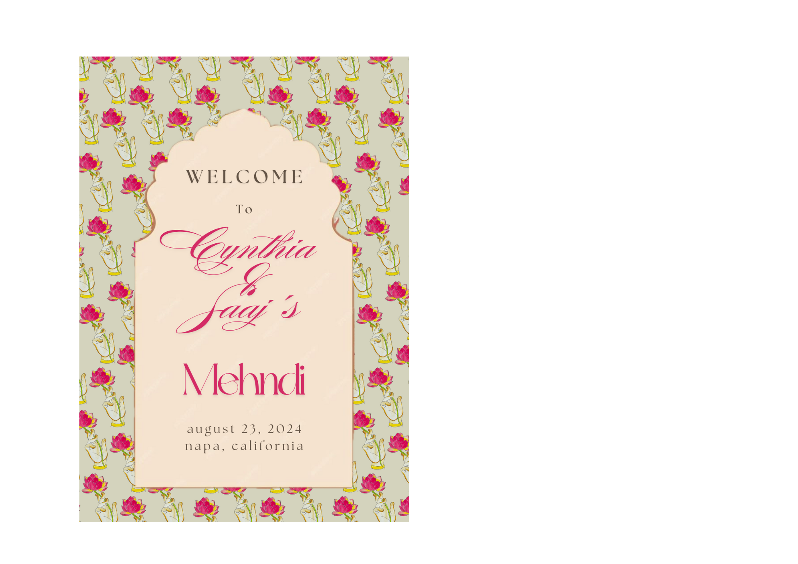

Pichwai
Lotus offering
This motif features a delicately rendered hand gracefully holding a blooming lotus, illustrated in the traditional Pichwai art style. Intricate linework, soft ornamental detailing, and heritage-inspired aesthetics reflect the symbolism of purity, devotion, and serenity. The motif was elegantly integrated into an invitation card design, creating a visual identity that feels sacred, celebratory, and culturally rooted, while still maintaining a refined contemporary composition.